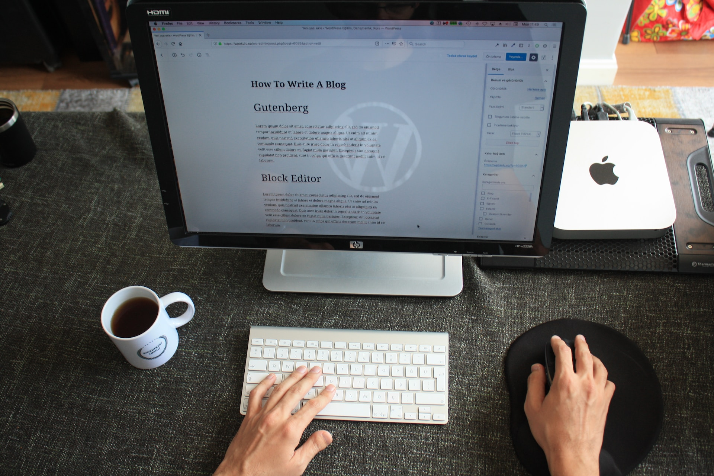

Album example
Something short and leading about the collection below—its contents, the creator, etc. Make it short and sweet, but not too short so folks don’t simply skip over it entirely.

This is a wider card with supporting text below as a natural lead-in to additional content. This content is a little bit longer.
9 mins